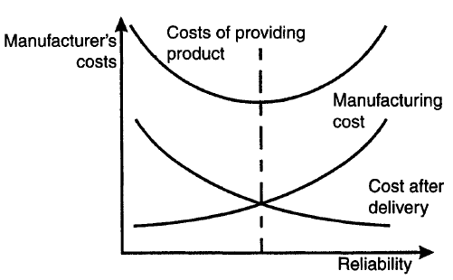
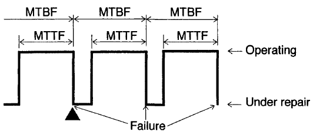
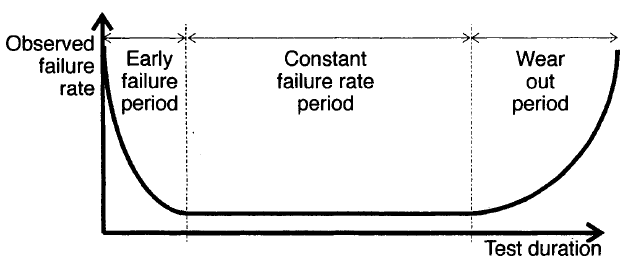
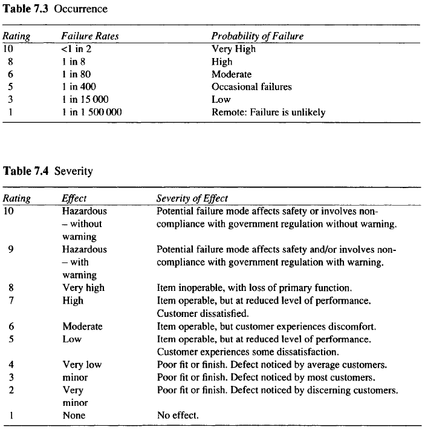
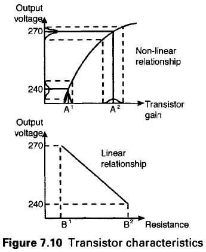

The purpose of testing and rework is to ensure the product fulfills the requirements of the project. It also involves fixing any unintended defects in the product. Time has to be taken into consideration, to ensure the product operates within specifications for as long as possible. Statistical assessment of the probability of failure is presented as an alternative to the use of factor of safety. The emphasis is on a better understanding of the limiting factors associated with the design. Quality and reliability are presented together and distinction drawn between the two.
| Systems Testing | Systems Engineering-Test, Evaluation, and Validation |
| Reliability Engineering | Reliability Engineering: An Overview (short) |
| Reliability Engineering: An Overview (long) | |
| Failure Mode and Effects Analysis (FMEA) | What is Failure Mode and Effects Analysis - FMEA? |
| Design for Quality | What is DFQ (Design For Quality)? |
| Test Driven Development - What? Why? And How? |
Assignment 2 - Software Defined Network Traffic System
Assignment 3 - Extensions of Three Dimensional Printing and Imaging
The reason for the steady increase in reliability engineering stems from the increasing awareness that the cost of ownership of a product or system comprises two components. The first is the capital cost and the second is the cost of operating, administering, maintaining and replacing the product or system. The second outlay, the running cost, can often exceed the capital cost and is a function of reliability. Indeed, because of the disastrous financial consequences of equipment failure most customers specify tightly reliability conditions.
One hundred per cent reliability testing is unthinkable since this implies that there would be no products for sale. The time required for reliability testing depends on the failure rate of the items under test. In general reliability adds cost to a product and although unreliability carries with it a cost penalty, the optimum level of reliability is always a compromise between the two. The below figure shows the general relationship between reliability and cost.
Reliability is concerned with the causes, distribution and prediction of failure. Failure is defined as the termination of the ability of a component or system to perform its required function. The parameter, 'failure rate' is given the symbol λ(t). Another method of describing the occurrence of failures is to state the mean time between successive failures. The two terms used, the mean time between failures (MTBF) and the mean time to fail (MTTF) are explained diagrammatically in the below figure. In many, but not all, cases MTTF and MTBF are the same. MTTF is the mean operating time between successive failures and the difference between the two terms is repair time. Hence,
MTTF + mean time to repair = MTBF
Components or systems which are not repaired do not extend beyond the point marked A in which case MTTF and MTBF are the same.
The failure rate is not necessarily constant. If a reliability test were undertaken with a large sample and each product were tested until it failed and not replaced, the typical failure rate against time curve would be what is known as the 'bath-tub' curve shown below.
During the early failure period, within hours of commencement of operation it is quite likely that failures will occur due to various imperfections acquired during the manufacturing process, due to design faults or misuse. Gradually, these early failures will occur less frequently. This period is often covered by the manufacturer's guarantee.
The constant failure rate period is usually relatively long and the failure rate is normally approximately constant. During this period it is usual for failures to occur at a relatively low rate but from a wide variety of causes.
The beginning of the wear out period corresponds to the end of the useful working life. All products wear out and this occurs because of a variety of time-dependent mechanisms.
Reliability R{t) is time related, and is defined as a probability and expressed as a value between 0 and 100%. Consider a number of components No being tested and allowed to fail without replacement so that at any time t there are Ns surviving. Then
R(t)=Ns(t)/No
If now the failure rate is expressed in terms of Ns(t) the relationship between failure rate and R(t) is
λ(t)=dNs(t)/Ns(t) dt
Solving these two equations when the failure rate is constant gives
R(t)=eλt
For this condition, the MTBF (9) is the reciprocal of the failure rate, hence
R(t)=e-t/θ
Whilst it is failure rate, MTBF, and hence reliability of components that is measured, it is the reliability of complete systems that is the ultimate concern of the designer, salesman and customer. The reliability of a system can be obtained from the knowledge of the reliabilities of its components. Whatever the system, failure of one component may cause the whole system to fail. For example, a domestic television may have 500 components, and manned spacecraft several million. Thus, the problem facing designers is not so much that the parts are unreliable but that there are so many of them. Many types of systemcomponent relationships exist. Series and parallel are two such relationships.
Consider a system comprising two components connected in series such that failure of either causes system failure. The reliability of the system is the product of the component reliabilities. If the components each have a reliability of 90% then
Reliability of the system =0.9x0.9=81 or 81%
Expanding to the case of N components connected in series;
Ran=Ra.Rb...Rn
R = reliability of the system
If a series system comprises 100 components each with a reliability of 90% then
R100 = (0.9)100 = 0.000 026
A reliability of this order implies that there is no hope of the system working satisfactorily over the required lifetime. If the individual reliability is increased to 0.999 then the system reliability becomes 0.906 or 90.6%. These examples are artificial since:
If the failure rates λa and λb apply to the two-component system such that
Ra=e-λat and Rb=e-λbt
Applying the series rule gives
Rab=e-(λa+λb)t
This shows that the system is a constant failure-rate system of failure rate (λa+λb).
Consider now another type of system, again comprising two components but so connected that if one fails the system does not fail. This is a parallel system because the failure of a single component does not cause system failure. The probability of system success in this case is now the probability that either or both units succeed, hence
Rab = Ra + Rb - RaRb
In general
Ran = 1 - (1-Ra)(1-Rb)...(1-Rn)
In order to achieve the degree of reliability required it may be necessary to duplicate components so that if one component fails there is another available to carry on working. The following are examples of this technique which is called redundancy:
Failure Modes and Effects Analysis (FMEA) was first used in the 1960s by the aerospace industry and is now a technique used by most industrial sectors. It is an objective method for evaluating system design. This is accomplished by establishing a multi-disciplinary team to consider all the potential failure modes of the components which make up a system or product and quantifying the influence such failures would have on overall reliability. It is one of the most powerful tools available for identifying reliability, safety, compliance, and product non-conformities during the design stages.
FMEA directs attention to those areas of a detail product design which may cause non-satisfaction of the reliability or safety criteria of the specification. Once critical components are identified then corrective action can be taken to improve the design. The technique can be used, for example, to identify critical parts within a system or product which benefit from the introduction of parallel or redundant components.
FMEA is an ongoing process that should start as a part of the first design review and continue throughout the life of the product. FMEA is a bottom up analysis technique.
The effect of a component failure depends upon the function of the component in the system. The severity of a potential failure is represented by the variable S and is assigned a value between 1 & 10, where 10 is the most severe. The occurrence of the failure (Relative Failure Rate) is represented by the variable O and is assigned a value between 1 & 10, where 10 is the highest failure rate. The ability to detect a failure is represented by the variable D which is assigned a value between 1 & 10 with 10 being the most difficult to detect. The relative importance of a failure mode is represented by its Risk Priority Number (RPN) calculated as
RPN = S x O x D
Every component has numerous potential failure modes and theoretically there is no limit to the depth one could go. Practically, there is a point of diminishing returns where the added cost exceeds the benefits derived. In practice a component with a RPN in excess of 100 is considered to be definitely worthy of attention. The FMEA process develops several very useful databases that provide manufacturers with the basic tools necessary to control the quality of their product.
MethodThe reasons for the FMEA being carried out by a multi-disciplinary team are explained by the subjective nature of arriving at the occurrence, severity and detectability scores. The following tables give general guidance for this process and the ratings quoted are those used in the automotive industry.
In the increasingly global competitive world in which companies must operate, persistent quality improvement, often allied with assembly and manufacture cost reduction, is essential if a company is to remain profitable. The quality of a product is a measure of the degree to which it meets the customer's requirements. Reliability is defined as the probability that a device or system will operate without failure for a given period of time. The difference between the two is the time element, reliability being concerned with how long quality exists.
A simple example which illustrates the difference between quality and reliability is a car tyre. The performance in cornering and braking deteriorates as the tyre wears. In other words, the quality deteriorates until it reaches an unacceptably low level and the tyre is replaced. By contrast, reliability is more a measure of the frequency with which tyre bursts occur.
The old concepts of improving product quality by controlling manufacturing processes and identifying poor quality items by inspection have given way to improving product and process design at the design stage. The main reasons for this dramatic switch of emphasis is that the vast majority of engineering changes occur close to, and sometimes after, the product is released for production. The later in the design and development process these changes occur the greater the cost penalty. This is particularly true once manufacture has commenced and the effect is magnified by delaying the launch of the product. The aim is to design quality in by getting the product right first time. The aim is to move the peak further left, as far before the release date as possible.
The adoption of the quality techniques which follow will result in shorter lead times, a reduced number of engineering changes, reduced costs and increased quality. Quality has no meaning unless it is related to cost, since, in general, the more expensive a product is the better its quality. The aim is to improve the quality of a product without increasing the cost of producing that product. This can be achieved by reducing the effects of variability of controlling parameters and the technique is called parameter design.
Within parameter design two different categories of factors are identified. The first category are control factors, which as the name suggests can be easily controlled. Examples of such factors include material selection, operating voltages and sizes. The second category are noise factors. These cannot be controlled easily and are often very costly when control is attempted. Examples include temperature and humidity. In an attempt at quantifying the effect of different parameters the signal to noise ratio has been introduced. This is so named because of the comparison in communications of the strength of a transmitted signal with the level of interference. There are three signal to noise ratios in general use: nominal, as in the case of colour density of a television; minimization, as for weight and noise; and maximization of such as strength or power.
The approach is to identify those control factors which are insensitive to noise factors and particularly those which exhibit non-linearity. The aim is to reduce the sensitivity of products to the source of variation. As an example consider the design of an electrical power supply circuit, the characteristics of which are illustrated in Fig. 7.10. Following conceptual (system) design the components making up the circuit are selected. There are many combinations of resistance, capacitance and transistor characteristics which will provide a functioning circuit.
If the desired output is 240volts then parameter design seeks to reduce the variability about this mean for all circuits produced, without significant increase in associated costs. The output voltage can be determined by the gain on the transistor, which is non-linear. In order to obtain an output voltage of 240 V the designer selects gain A*. If the actual gain deviation is as represented by the area under the normal curve then the voltage will also deviate about the target of 240 V. An alternative course of action is to use the effect of the non-linearity of the gain curve. If the flatter part of the curve were used, the target voltage would increase to around 270 V but the deviation about this value would be reduced.
Such adjustment of target value, and the introduction of an extra component, in this case a resistor to reduce 270 V to 240 V, must be considered carefully. It can often be a simpler and more cost effective way of controlling variance. Obviously the variance of the resistor must also be taken into account.
It is common practice to specify constraints in the PDS in terms of the limits of tolerance. If parameter design is to make its full impact then this must change and the constraints in the PDS must be specified in terms of target or ideal values with accompanying limits of tolerance. Consider for example the fitting of a cab door. If the door is made to the smallest acceptable size and the frame to the largest acceptable size then the door will still operate satisfactorily but it may leak under certain conditions and allow more noise into the cab than a door and frame made to target. Target sizes guarantee optimum quality and should be the aim for the maximum amount of production possible.
Although it is difficult to quantify the quality of a product one measure is becoming accepted. This is called Loss to Society. The smaller the loss the greater the quality. A product causes losses when it deviates from target values, even when within the specified tolerance limits. An often quoted example, first published in a Japanese newspaper, involves two manufacturing plants making identical television sets for Sony, one in the USA and the other in Japan. The key characteristic involved was colour density, the target values for which were set after extensive customer trials.
Measures to counteract and reduce product variability can only be taken during design. Techniques used later, during manufacturing or process design can reduce variance introduced due to, for example, manufacturing tolerances and material imperfections. However, even these can be most effectively tackled during design.